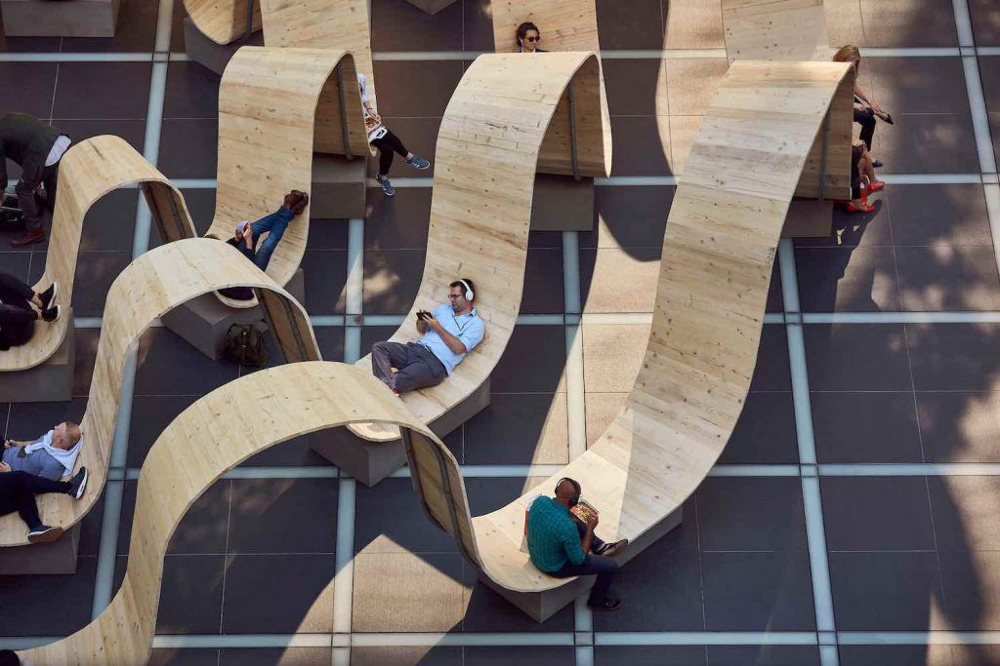
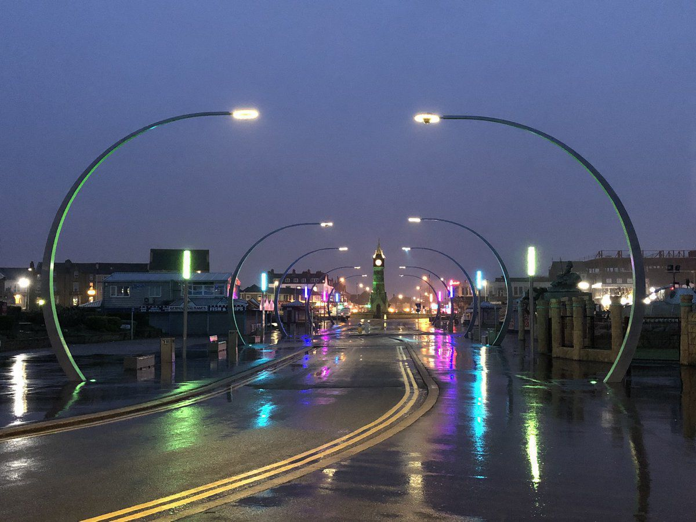

+++
title = "İşlevlerine Göre Kent Mobilyası Tasarımları"
description=""
url="sayi-13/kent-mobilyalari-tasarimi"
aciklama="Kent mobilyaları; kentsel yaşamı daha zevkli ve anlamlı kılan, kullanıcıların toplum yaşamındaki ihtiyaçlarına çözüm getiren, kentsel konfor ve estetik tanıyan tasarım ürünlerdir. Kent mobilyaları, ülke ve şehirlerin kültürel özelliklerine bağlı olarak çeşitlenmektedir. Bu elemanlar, kentsel kimliği oluşturmak ve toplum hayatını kolaylaştırmak açısından çok önemli role sahiptir."
type="sayfa"
thumb="/img/"
date = "2021-09-06"
sayi=["13"]
sayfa="04"
yazar=["merve cetin"]
tags= ["ana sayfa", "dergi"]
+++

<div class="container">
   <p>
      {{}}
   </p>
   <h2 id="kent-mobilyası-nedir">Kent Mobilyası Nedir?</h2>

   <div class="row">
      <div class="col-md-6">
         <p>
            Kent mobilyaları; kentsel yaşamı daha zevkli ve anlamlı kılan,
            kullanıcıların toplum yaşamındaki ihtiyaçlarına çözüm getiren, kentsel
            konfor ve estetik tanıyan tasarım ürünlerdir.
         </p>
         <p>
            Kent ise mekanların oluşturduğu bir bütündür. Mekanı donatma kavramı
            ile başlayan kent mobilyalarının tasarım süreci kent ölçeğinde
            yayılarak kentsel alanların oluşmasını sağlamaktadır.
         </p>
         <p>
            Kent mobilyaları, ülke ve şehirlerin kültürel özelliklerine bağlı
            olarak çeşitlenmektedir. Bu elemanlar, kentsel kimliği oluşturmak ve
            toplum hayatını kolaylaştırmak açısından çok önemli role sahiptir.
         </p>
         <p><strong>Kent mobilyaları, bir sınıflandırma olmaksızın;</strong></p>
         <p>• Bulunduğu kentin bir parçası olup özelliklerini çağrıştırmalı.</p>
         <p>• Kullanıcılara, kullanılmaya davet edici bir nitelik yansıtmalı.</p>
         <p>
            • Açık alanda kullanılacağı için her türlü hava şartına uygun olmalı.
         </p>
         <p>
            • Ürünler kentte bulunan her bireye açık olduğu için vandalizme karşı
            önlemler alınmış olmalı.
         </p>
         <p>
            • Kent mobilyalarının kullanıcısı belirsiz olduğu için (çocuk parkları
            gibi bazı istisnalar hariç) ergonomi, kullanışlılık, biçim gibi
            etmenler açısından her türlü yaş grubuna uygun olmalı.
         </p>
         <p>
            • Kent mobilyasının üzerinde bulunacağı zemin yapısı (beton, toprak,
            taş.. vs.) ile ilişkisi iyi çözümlenmiş olmalı.
         </p>
         <p>
            • Kentsel mekanın mevcut düzenini bozmamalı. (Örn; yürüyüş yolunu
            kapatmamalı, trafiğe engel olmamalı vs.)
         </p>
      </div>
      <div class="col-md-6">
         {{}}
         <small
            > 
               Kent mobilyalarının tasarımcıdan kullanıcıya kadarki sürecini gösteren
               şema. [1]
           </small
         >
      </div>
   </div>

   <p>
      Kent mobilyaları, başlıca
      <strong
         ><em
            >dinlenme, temizlik, aydınlanma, iletişim, oyun, sınırlama,
            bilgilendirme ve süsleme</em
         ></strong
      >
      gibi işlevleri sağlayan toplum yaşamını kolaylaştıran, güvenli ve
      sağlıklı ortamların oluşumu üzerinde etkili, kullanıcıların beğenisine
      sunulan tasarım ürünleridir.
   </p>

   <strong
      ><em
         >Şimdi biraz da kent mobilyalarını işlevlerine göre inceleyelim...</em
      ></strong
   >
<hr>
   <h3 id="dinlenme-oturma-elemanları">1. Dinlenme</h3>
   <h4 class="text-secondary mt-1">Oturma Elemanları</h4>
   <div class="row">
      <div class="col-md-6">
         <p>
            <strong>Kent mobilyası olarak oturma elemanları</strong> dinlenme,
            sohbet etme, birini bekleme veya sadece zaman geçirme gibi ihtiyaçları
            karşılamak için kullanılırlar. Kentte sosyal mekan yaratmak, insanları
            istenilen bir mekana toplamak ve topluluklar yaratmak için de
            kullanılırlar.
         </p>
         <p>
            İnsan ergonomisinin iyi analiz edildiği, kullanıcı beklentilerinin
            doğru olarak ürüne yansıtıldığı, malzeme seçme ve uygulama kararlarının
            doğru şekilde alındığı bir tasarım süreci, kullanıcıyı memnun edecek
            kent mobilyalarının ortaya çıkmasını sağlayacaktır.
         </p>
         <p class="mb-md-5">
            Boyutları, malzemesi ve tasarımı kullanıcıların fiziksel konforunu
            doğrudan etkilemektedir.
         </p>
         {{}}
         {{}}<small>Sunset Parklet, San Francisco</small>
      </div>
      <div class="col-md-6">
         <h4 class="mt-3">Tasarım Kriterleri</h4>
         <ul>
            <li>
               Konfor ve sağlık şartlarına uygun oturmanın sağlanabilmesi için
               kullanıcı ve ekipman arasındaki boyutlar önem taşımaktadır. Vücudun
               belli pozisyonlarındaki anatomik boyutlar saptanmalı ve ona göre
               ürün boyutları belirlenmelidir.
            </li>
            <li>Oturma elemanları yol akışına engel olmamalıdır.</li>
            <li>
               Oturma elemanını kullanan bireyler arasında oluşacak etkileşimin
               hangi düzeyde olması istendiğine karar verilmeli ve o etkileşim
               düzeyini sağlayacak şekilde düzenlenmelidir. (Örneğin, sosyal bir
               alan yaratılmak isteniyorsa bireylerin otururken birbiriyle rahat
               iletişim kurabileceği şekilde bir düzen oluşturulmalıdır.)
            </li>
            <li>
               Özellikle, bakım ve tamiratı kolaylaştırmak ve çabuklaştırmak için
               modüler yapıda olması avantaj sağlayacaktır.
            </li>
         </ul>
         {{}}
         {{}}<small>Please Be Seated, London</small>
         <h5 class="mt-md-5">Malzeme</h5>
         <p>
            Malzemeler dış mekanda kalıcı ve dayanıklı olabilecek türden olmalıdır.
            Bu nedenle metal alaşımları, ahşap, beton, plastik en çok rastladığımız
            malzemelerdir. Üretim yöntemi dökme, çekme, bükme, kaynak ve prestir.
         </p>
      </div>
   </div>

<hr>
   <h3
      id="temizlik-çöp-konteynerleri-geri-dönüşüm-kutuları-atık-toplama-birimleri-vs"
   >
      2. Temizlik
   </h3>
   <h4 class="text-secondary mt-1">Çöp konteynerleri, geri dönüşüm kutuları, atık toplama
    birimleri...</h4>
    <div class="row">
    <div class="col-md-6">         <p>
      İnsan yaşamında çöp her zaman var olan ve olacak bir olgudur. Yaşam
      tarzındaki ilerlemeler ve değişimler yeni çöp tiplerinin doğmasına
      neden olmaktadır. Kent mobilyası olarak çöp kutularının görevleri
      kentsel mekanlarda insanların ürettiği çöplerin biriktirilmesi ve
      gerekli araçlarla naklinin yapılacağı zamana kadar korunmasıdır. Eğer
      bu yapılmazsa çöpler sokaklara atılmakta ve bu da çevre kirliliği
      oluşturmaktadır.
   </p>
   <p><strong>Tasarım Kriterleri</strong></p>
   <ul>
      <li>
         Çöp kutularının boyutları boşaltılma sıklıkları ile bağlantılıdır.
      </li>
      <li>
         Çöp kutuları çevreye uygun olmanın yanında, insan ergonomisine de
         uygun olmalıdır. Örneğin çöp kutularının kapağı hem yetişkinler hem
         de çocuklar için uygun yükseklikte olmalı ve ayrıca çöpün kolay
         boşaltılmasını mümkün kılacak şekilde tasarlanmalıdır.
      </li>
      <li>
         Çöp kutuları en çok ihtiyaç duyulan noktalara yerleştirilmelidir.
      </li>
      <li>
         Algılanabilir olmalıdır. Örneğin ayrıştırılmış atık kovalarının
         hangi malzemeye ait oldukları net bir şekilde kullanıcı tarafından
         anlaşılmalıdır.
      </li>
      <li>
         Kent sakinlerinin atıklarını atık kovasına atması için kendisine
         çekmelidir.
      </li>
   </ul>
   <p><strong>Malzeme</strong></p>
   <p>
      Çöp kutuları sert ve kötü kullanımlara karşı dayanıklı malzemelerden
      yapılmalıdır. Bu malzemelere örnek olarak; dökme beton, cam takviyeli
      beton, ağır alaşımlı çelik, alüminyum, düşük yoğunluklu polietilen
      plastik, galvanize sac, armatürlü beton, emaye boyanmış çelik,
      polietilen kaplı çelik ve ahşap örnek verilebilir.
   </p></div>
    <div class="col-md-6">      {{}}
      {{}}
   <small>New York, ABD</small></div>
</div>


<hr>
   <h3 id="aydınlanma-aydınlatma-elemanları">
      3. Aydınlanma
   </h3>
   <h4 class="text-secondary mt-1">Aydınlatma Elemanları</h4>
   <div class="row">
    <div class="col-md-6">       <p>
      Kent üzerinde yer alan aydınlatma elemanları gerek kentteki işlevsel
      özellikleri gerekse bulundukları çevreye tasarım yönünden görsel
      katkıları nedeniyle <em>kent mobilyası</em> olarak değerlendirilirler.
      Aydınlatma elemanları ışıklı gereçler olduğu için kentte ilk fark
      edilen ögeler arasındadır; bu nedenle özellikle akşamları, kentsel
      alanlarda diğer kent mobilyalarına göre daha fazla görsel etkiye
      sahiptir.
   </p>
   <p><strong>Tasarım Kriterleri</strong></p>
   <ul>
      <li>Gece ve gündüz görünümleri beraber düşünülmelidir.</li>
      <li>
         Aydınlatmanın sağlanacağı bölge neresi ise (yol, sokak, park.. vs.)
         ona uygun biçimde çalışılmalıdır.
      </li>
      <li>Çevrelerindeki yapılarla uygun tasarlanmalıdır.</li>
      <li>Monte edildikleri direklerle, ölçülü ve uyumlu olmadırlar.</li>
      <li>
         Bazen dikkat çekmeyecek biçimde olabileceği gibi bazen de özellikle
         ilgi çekici olması gerekebilmektedir. Bulunduğu çevrede ihtiyaç ne
         şekildeyse ona göre ayarlanmalıdır.
      </li>
   </ul>
   <p><strong>Malzeme</strong></p>
   <p>
      Dış ortamda kullanılan bu elemanların dayanıklı, paslanmayan, aşınmayan
      malzemelerden seçilmesi gerekir.
   </p>
   <p>
      Aydınlatma elemanlarında kullanılan lamba türleri çok çeşitlidir. Bu
      lambalardan en uygun ve ekonomik olanını seçebilmek için de bazı
      noktalara dikkat edilmelidir.
   </p>
   <p><strong>Bakım ve Onarım</strong></p>
   <p>
      Aydınlığın boşa harcanmaması ve niteliği açısından, aydınlatılacak
      alandaki renksel özellikler ile, lambaların ışık özellikleri birbirine
      uygun olmalıdır. Çok özel durumlar söz konusu olmadıkça, renksel
      geriverimi yüksek olan lambalar tercih edilmelidir.
   </p>
   <p>
      Bakım kolaylığı açısından, uzun ömürlü ve çalışması için çok sayıda ek
      parça gerektirmeyen lambalar tercih edilmelidir.
   </p>
   <p>
      Aydınlatma elemanları vandalizme en çok maruz kalan ve vurma ve
      çarpmalardan zarar gören kent mobilyaları arasında yer almaktadır.
      Aydınlatma elemanlarında en çok lambaların kırılması, bozulması veya
      elektrik bağlantılarında problemler çıkması görülmektedir. Bu nedenle
      öncelikle dayanıklı malzemeden yapılmış elemanlar seçilmeli ve düzenli
      olarak bakımları yapılmalıdır.
   </p></div>
    <div class="col-md-6">  
       {{}}
      <small>Skegness, İngiltere</small>      <br><br>
      {{}}  
      <small>Assen, Hollanda</small></div>
</div>

<hr>
   <h3 id="i̇letişim-telefon-kulübeleri">4. İletişim</h3>
   <h4 class="text-secondary mt-1">Telefon Kulübeleri</h4>
   <p>
      Teknolojinin henüz günümüzdeki seviyesine gelmediği zamanlarda daha sık
      kullanılan bu ürünler bireylerin kentsel mekanda özel olarak haberleşme
      ihtiyacını karşılamak için mekanlara yerleştirilmiş birimlerdir. Üç
      temel şekilde görülebilirler: Taşıyıcı üzerinde, duvara monte edilmiş,
      kabin içinde.
   </p>
   <div class="row">
    <div class="col-md-4">      {{}}   <small>K6 Telephone Box, London</small></div>
    <div class="col-md-4">  <h5>Tasarım Kriterleri</h5> <ul>
      <li>
         Kullanıcı telefonla konuşurken dışarıdaki gürültüden
         etkilenmemelidir.
      </li>
      <li>
         Kullanıcı telefonla konuşurken dışarıdan geçen diğer bireylerin onu
         duymayacağını bilmeli telefonla konuştuğu alanda mahremiyet
         sağlanmalıdır.
      </li>
      <li>
         Telefon kulübeleri kullanımda kolaylık sağlamak ve güvenlik
         açısından aydınlatılmalıdırlar. Taşıyıcı ayak üzerinde duran
         telefonlar, bulundukları kent düzeni içindeki aydınlatma öğeleri ile
         aydınlatılabilirler fakat telefon kulübeleri için bu tip bir
         aydınlatma yetersiz olacaktır.
      </li>
      <li>
         İnsan ölçeği dikkatli bir şekilde kullanılmalıdır. Özellikle
         engellilerin ve çocukların kullanımı da göz önünde
         bulundurulmalıdır.
      </li>
   </ul>   <h6>Malzeme</h6>
   <p>
      En sık kullanılan ilk örnekleri; ahşap veya dökme demirden yapılmış
      olan birimlerdir. Günümüzde ise alüminyum veya çelik çerçeveli ve cam
      yüzeyden yapılmış malzemelerdir.
   </p></div>
    <div class="col-md-4"> {{}}   <small>Orelhao Phone Box, Brazil</small></div>
</div>


<hr>
   <h3 id="eğlence-çocuk-parkları">5. Eğlence</h3>
   <h4 class="text-secondary mt-1">Çocuk Parkları</h4>
   <p>
      Çocuk oyun alanları, açık ve kapalı mekanlarda çocukların oyun oynama
      ihtiyaçlarına cevap veren, sosyalleşmelerini sağlayan, fiziksel ve
      psikolojik gelişimlerine katkıda bulunan mekanlardır. Oyun alanları
      çocukların kendilerini iyi hissetmelerine, duygusal gelişimlerine,
      iletişim becerilerinin artmasına yardımcı olurlar.
   </p>
   <p>
      Oyun elemanları tasarımı çocuğun, ailenin ve toplumun istekleri, doğal
      ve yapay çevre verileri, bütçe olanakları gibi bir dizi bileşen
      uzlaştırılarak sonuçlandırılır.
   </p>
<div class="row">
    <div class="col-md-6">   <h5>Tasarım Kriterleri</h5></p>
      <ul>
         <li>
            Kullanıcısının çocuklar olduğu göz önüne alınarak bir güven ortamı
            oluşturulmalıdır. Oyun parkları her ne kadar çocuklar tarafından
            sevilse de çocukların ilgisini çekecek, çocuklara en iyi hitap
            edecek şekilde düzenlenmelidir.
         </li>
         <li>
            Çocukların ters bir hareketi sonucunda zarar görmesine neden
            olabilecek herhangi bir eleman/parçanın parkta bulunmamasına
            kesinlikle dikkat edilmelidir. Bağlantı detayları (sürgü, menteşe,
            vida vb.) sağlam yapılmalı ve gizlenmelidir.
         </li>
         <li>
            Alanın içinde güvenlik sağlanması açısından etraftaki diğer
            mekanlardan sınırlandırılmalıdır.
         </li>
      </ul></div>
    <div class="col-md-6">{{}}   <small>New York, ABD</small></div>
      <div class="row">
    <div class="col-md-4">
   <p><strong>Malzeme</strong></p>
   <p>
      Oyun parklarında kullanılan malzemelere baktığımızda, ahşap,
      polietilen, metal malzemeler en sağlıklı olanlar olarak karşımıza
      çıkmaktadır. Oyun alanlarının genel çevre düzenlemelerinde ise beton,
      çimento, tuğla, doğal taş, seramik, plastik, asfalt kullanılmaktadır.
   </p></div>
    <div class="col-md-4">      {{}}   <small>Marmara Forum, İstanbul</small></div>
    <div class="col-md-4">      {{}}</div>
</div>
</div>
<hr>
   <h3 id="sınırlayıcılar-yaya-bariyerleri-trafik-bariyerleri-caydırıcılar">
      6. Sınırlayıcılar
   </h3>
   <h4 class="text-secondary mt-1">Yaya bariyerleri, trafik bariyerleri, Caydırıcılar</h4>
   <div class="row">
    <div class="col-md-4">      {{}}</div>
    <div class="col-md-4">         <p>
      Sınırlayıcı elemanların temel amaçları; gizlilik, emniyet ve güvenlik,
      estetik, sınır belirleme, sirkülasyon kontrolü, çevresel özelliklerin
      kontrol edilmesi ve bölmeler oluşturmak olarak sıralanabilir.
   </p>
   <p>
      Sınırlayıcı elemanlar estetik yönden kullanılacağı ortamın biçim ve
      anlayışına uymalıdır. Böylece ortaya çıkan düzenlemeler hem fonksiyonel
      hem de estetik açıdan yararlı ve yapıcı olacaktır.
   </p></div>
    <div class="col-md-4">      {{}}</div>
</div>
<hr>
   <h2
      id="bilgilendirme-i̇lan-reklam-panoları-bilgi-panoları-meydan-saatleri-sokak-levhaları"
   >
      7. Bilgilendirme
   </h2>
   <h4 class="text-secondary mt-1">İlan-reklam panoları, bilgi panoları, meydan saatleri,
      sokak levhaları...</h4>
      <div class="row">
    <div class="col-md-4">      {{}}</div>
    <div class="col-md-4">      {{}}</div>
    <div class="col-md-4">      {{}}</div>
</div>

<p>
   Kent, bireye özgü olmayıp toplumsal bir mekan olması sebebiyle
   etkileşim ve iletişimin en yüksek düzeyde olduğu yerdir. Ortak bir
   kullanım alanı olması sebebiyle kent mekanının düzeninin ve
   işlerliğinin sağlanabilmesi ve korunabilmesi için bilgilendirici ve
   yönlendirici elemanlara ihtiyaç duyulur. Amaç, işaretlerle bilgi
   akışını netleştirmek ve düzenlemektir.
</p>
<p>
   Pano veya levha üzerinde yer alan yazı/işaretler iyi derecede
   görünebilir olmalıdır. Üzerinde gereksiz ve fazla bilgilerden
   kaçınılmalıdır.
</p>
<p>
   Kullanılan malzemelerde iklim şartları, coğrafya ve kullanıcıların
   sosyo-ekonomik yapısı etkilidir.
</p>
   <hr>
   <h3 id="süsleme-heykeller--süs-havuzları-çiçeklikler">
      8. Süsleme
   </h3>
   <h4 class="text-secondary mt-1">Heykeller, süs havuzları, çiçeklikler</h4>
   <p>
      Gün geçtikçe daha da betonlaşan kentlerde, özellikle yaya mekanlarında
      ortama estetik bir değer katmak amaçlanır.
   </p>
   <p>
      Ortama estetik değer katmayı amaçlayan her türlü eleman bulundukları
      mekan ile ölçü, biçim ve malzeme açısından uyum içinde olmalıdır. Diğer
      kent mobilyaları gibi vandalizmden ve taşıma sırasında meydana
      gelebilecek etkilerden zarar görmeyecek yapıda olmalıdırlar.
   </p>
   <div class="row">
    <div class="col-md-4">  {{}}</div>
    <div class="col-md-4">  {{}}</div>
    <div class="col-md-4">{{}}</div>
</div>
<button
class="btn markutbtn"
data-target="#my-collapse"
data-toggle="collapse"
aria-expanded="false"
aria-controls="my-collapse"
>
Kaynaklar
</button>
<div id="my-collapse" class="collapse">
<pre> <small><code>  
   [1] https://polen.itu.edu.tr/bitstream/11527/3674/1/4402.pdf

   https://dergipark.org.tr/en/download/article-file/799480
 
   http://dergi.neu.edu.tr/index.php/yakinmimarlik/article/view/268/94
 
   https://polen.itu.edu.tr/bitstream/11527/3674/1/4402.pdf
 
   https://www.nationalgeographic.com/travel/article/best-playgrounds-around-world-family-travel
 
   http://dspace.yildiz.edu.tr/xmlui/bitstream/handle/1/11336/0033961.pdf?sequence=1&isAllowed=y
  </code></small></pre>
</div>
</div>
